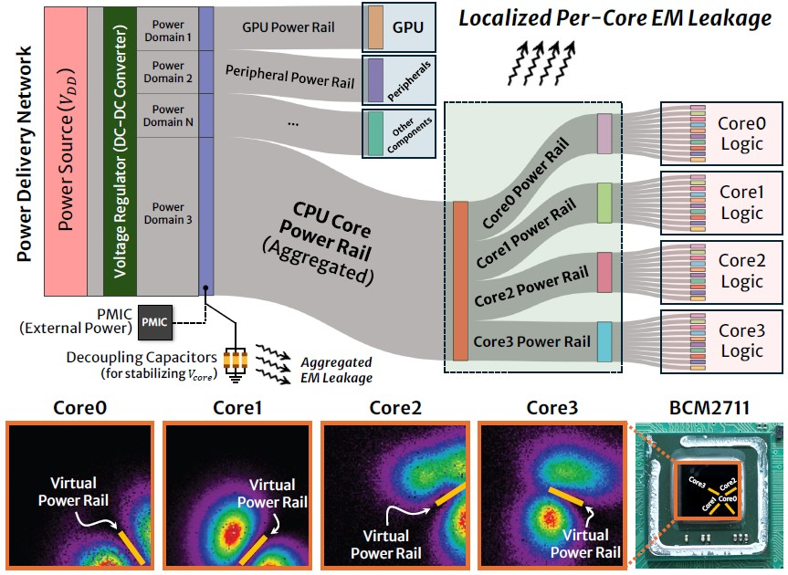
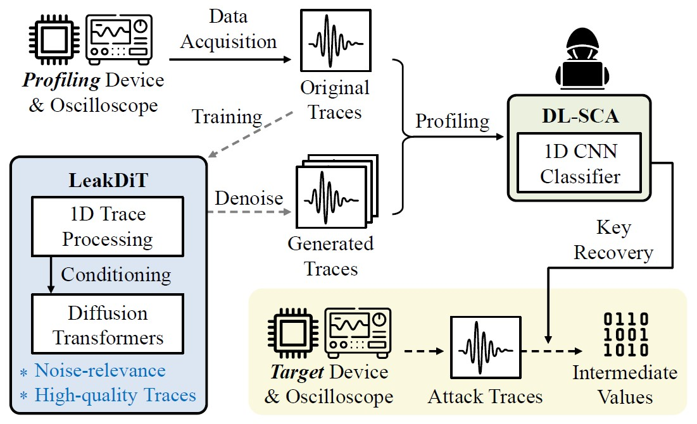
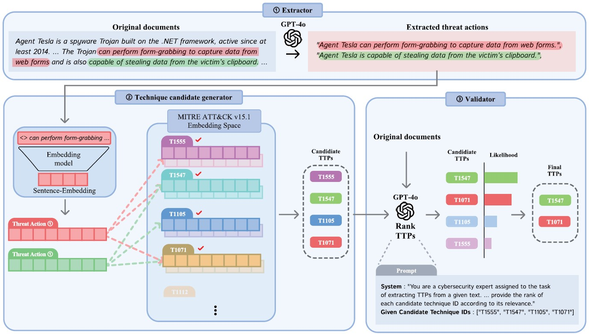
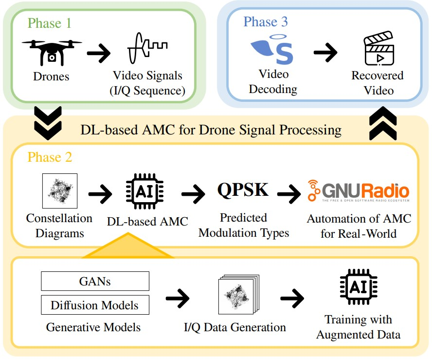
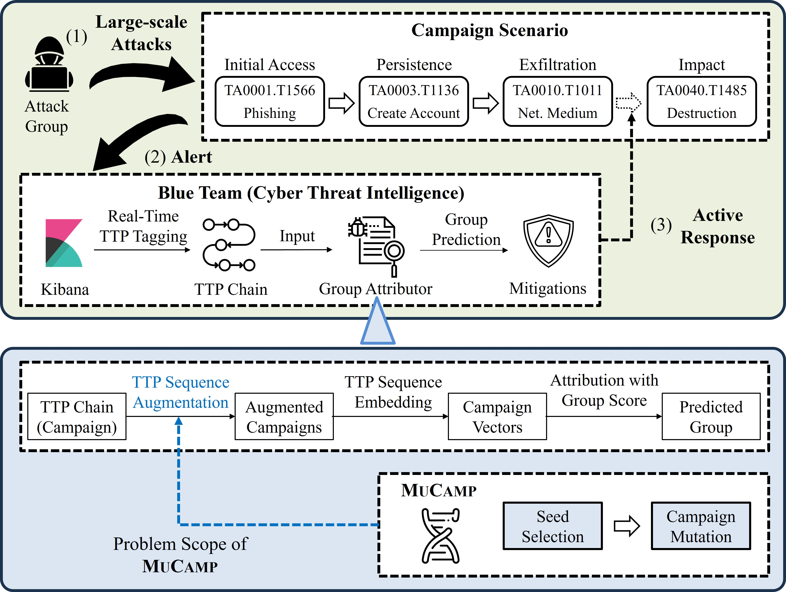
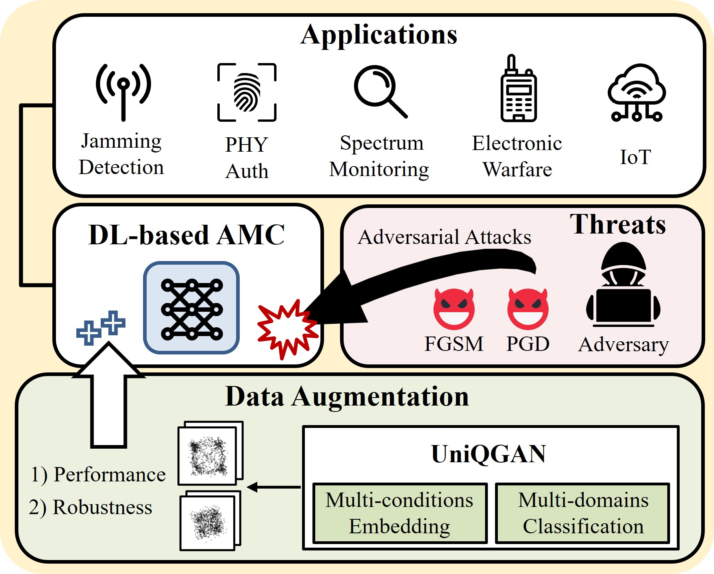
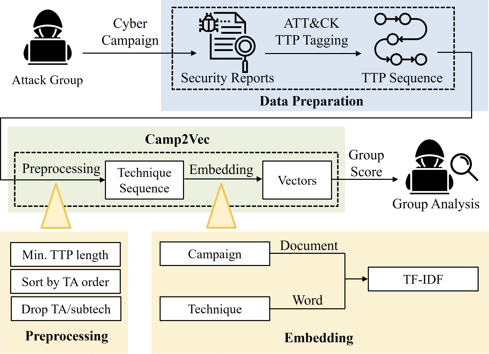
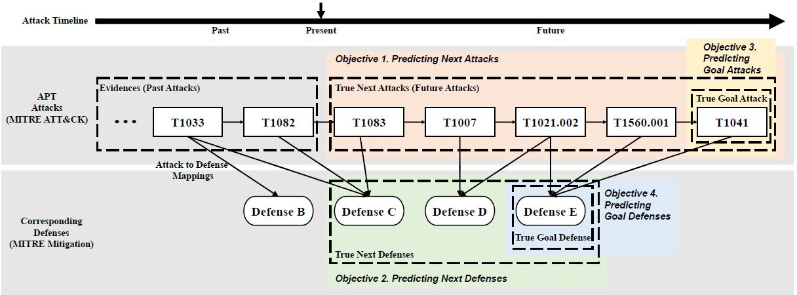
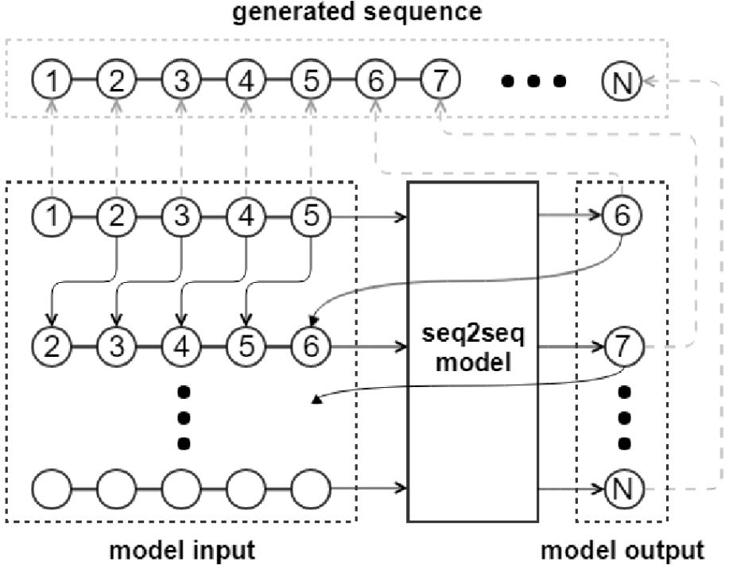
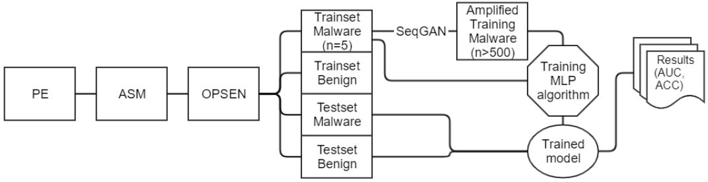

Publications

Exploiting Per-Core Leakage: Electromagnetic Side-Channel Monitoring of Multicore Architectures
ACM/IEEE Design Automation Conference (DAC), Jul. 2026
BK21+ IF: 3 · Top-tier EDA/Hardware Conference

LeakDiT: Diffusion Transformers for Trace-Augmented Side-Channel Analysis
IEEE Computer Architecture Letters, Vol. 25, No. 1, pp. 5–8, Jan./Jun. 2026

Multi-Step LLM Pipeline for Enhancing TTP Extraction in Cyber Threat Intelligence
IEEE Access, Vol. 13, pp. 179696–179710, Oct. 2025

Enhancing Modulation Classification via Diffusion Transformers for Drone Video Signal Processing
IEEE Signal Processing Letters, Vol. 32, pp. 3325–3329, Aug. 2025

MuCamp: Generating Cyber Campaign Variants via TTP Synonym Replacement for Group Attribution
IEEE Transactions on Information Forensics and Security (TIFS), Vol. 20, pp. 6162–6174, Jun. 2025
JCR 2024 Top 7.8% in CS, Theory & Methods · Top-tier Security Journal

UniQGAN: Towards Improved Modulation Classification With Adversarial Robustness Using Scalable Generator Design
IEEE Transactions on Dependable and Secure Computing (TDSC), Vol. 21, No. 2, pp. 732–745, Mar./Apr. 2024
JCR 2023 Top 4.9% in CS, Software Engineering · Top-tier Security Journal

Camp2Vec: Embedding Cyber Campaign With ATT&CK Framework for Attack Group Analysis
ICT Express, Vol. 9, No. 6, pp. 1065–1070, Dec. 2023

Exploiting TTP Co-occurrence via GloVe-Based Embedding With ATT&CK Framework
IEEE Access, Vol. 11, pp. 100823–100831, Sep. 2023

BAN: Predicting APT Attack Based on Bayesian Network With MITRE ATT&CK Framework
IEEE Access, Vol. 11, pp. 91949–94968, Aug. 2023

Anomaly Dataset Augmentation Using Sequence Generative Models
IEEE International Conference on Machine Learning and Applications (ICMLA), Dec. 2019

Opcode Sequence Amplifier Using Sequence Generative Adversarial Networks
International Conference on ICT Convergence (ICTC), Oct. 2019
Multi-Domain Side-Channel Analysis for Anomaly Detection in Embedded System
Submitted to IEEE Embedded Systems Letters
TBD (Side-Channel)
Submitted to ACM CCS 2026
Method for Augmenting Cyber Attack Campaign Data to Identify Attack Group, and Security
Korea Patent Application No. 10-2024-0176082, Dec. 2024
Information Identification Method and Electronic Apparatus Thereof
Korea Patent Application No. 10-2024-0006106, Jan. 2024
Method for Training Attack Prediction Model and Device Therefor
U.S. Patent No. US20230308462A1, Sep. 2023
Apparatus, Method, Computer-readable Storage Medium and Computer Program for Generating Operation Code
Korea Patent No. 10-2246797, Apr. 2021
EM-Based Anomaly Detection using a Dual-Domain Approach
KIISC Winter Conference (CISC-W'25), Nov. 2025
Outstanding Paper Award
A Statistical Time-Domain Approach to Anomaly Detection for Robotic-Arm MCU
KIMST Fall Conference, Nov. 2025
Reinforcement Learning for Parameter Optimization in CADO-NFS Polynomial Selection
KIISC Winter Conference (CISC-W'25), Nov. 2025
Enhanced DDoS Detection via Traffic Volume-Based Labeling and Transfer Learning
Journal of Internet Computing and Services (JICS), Vol. 26, No. 4, pp. 1–8, Aug. 2025
User Behavior Embedding via TF-IDF-BVC for Web Shell Detection
Journal of The Korea Institute of Information Security & Cryptology (JKIISC), Vol. 34, No. 6, pp. 1231–1238, Dec. 2024